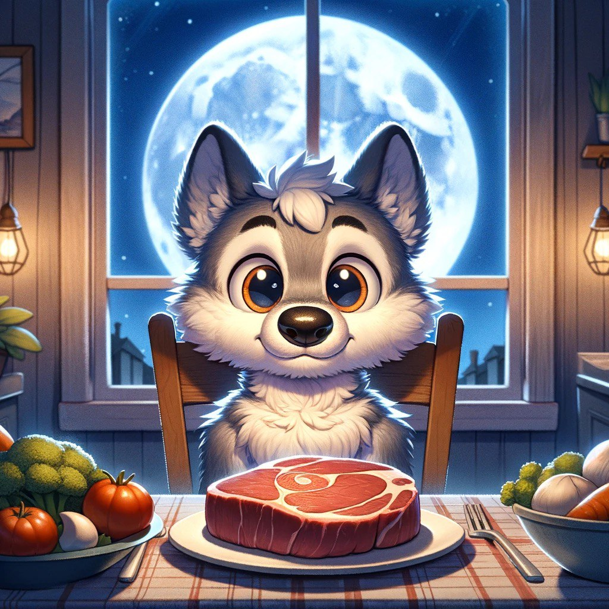

What are Lunivors
 This blog post is about a new species: the Lunivors (also known as Werecarnivors). Full disclosure, I am in fact one of them, so this post might be a bit biased. Lunivors are cousins of the more known Werewolves and, in fact, share many similarities. The main distinction is that we don’t turn into wolves during the full moon but instead we regain the ability to eat meat, an ability that we have (to the displeasure of many of us) lost for the rest of the moon cycle. I am writing this blog post because many have called it a diet, or were in general really confused about the concept with reactions ranging from "What?" to "What? Why would you do that to yourself?". But it isn’t a diet, the same way that being a werewolf isn’t one. (Lore aside, this is actually a diet but we cannot say so aloud; we can only say this when meta-talking about being a Werecarnivor). This leads to the three rules that govern and define the Werecarnivore (or Lunivore):
- A Lunivore cannot talk about being a Lunivore as if it were a diet.
- A Lunivore can eat meat only when the moon is full.
- To become a Lunivore, a person must be bitten by a fellow Lunivore during a full moon.
Examples of Rule 1.
- Example 1
-
Lunivor is a type of diet =====> This sentence cannot be pronounced by a fellow Lunivor.
- Example 2
-
The person talking enters the meta world:
(Ok, guys, all jokes aside, being a Lunivor is a diet, but I cannot say so out loud, so please never ask me again.) ===> This sentence can be pronounced by a fellow Lunivor.
F.A.Q.
- Wait, doesn’t this make the moon a loading bar?
Yes, I am sorry about that.
- Wait, what would happen if this meme became so powerful that everybody became a Lunivor?
Congratulations, this is actually one of the only two known cures to stop being a Lunivor, the other one being Bernie Sanders becoming president of the United States (don’t ask me why, scientists say so).
(Ok, guys, all jokes aside, being a Lunivor is a diet that concentrates the meat consumption on full moon days. This would drastically decrease meat consumption and hence all the environmental and ethical consequences. Plus, we would slowly get used to eating less meat, and when actually eating it, it would be an important moment. It would turn meat eating into a communal experience in which we could all be grateful for it, rather than just consuming meat without thinking about how it got there.) - Wait, is being a Lunivor ethical?
- Do you howl at the moon when it's full?
I don’t know, is being a human ethical? Being a Lunivor is not an ethical question, as it is not a choice (or if it was, a choice you can take back), as being a Lunivor is not a diet. You can be a Lunivor and simply decide not to eat meat when the full moon is up. Vegans can also turn into Lunivors; sadly (?), they are not immune.
Yes, but only because it's fun (and because we tend to have an inferiority complex towards Werewolves).
Conclusion.
In closing, the existence of Lunivors among us challenges not only our understanding of the
mythical and the real but also invites us to reconsider our relationship with nature, diet,
and the cycles that govern our world. As we emba
rk on a global census of Werecarnivors, we stand at the cusp of
uncovering not just numbers, but stories, struggles, and the shared humanity (or not) that binds us
all, regardless of the moon's phase.
As we look up at the moon—whether full, crescent, or new—we might find
ourselves wondering about the unseen ties that connect us all: We separated ourself from Nature,
knowing deep down that our fates are intertwined. We made "it" just an object to justify it's
exploitation for our gain. But in doing so we lost sight
of the consequences of our actions. From CO2 emissions, soil impoverishment, biodiversity loss to many
more planetary boundaries we continue to carelessly damage. To change our course, it's not enough
to have an energy transition (if such is even possible do do),
we need to change the way we think. We need give back a soul to Nature and to do so we need to change
the
stories we tell ourself and create new ones to decolonize our mind. I believe that Lunivors
can be a playful example of this.
One among many other that we will need, to reconnect us to reality and to the ecosystem.